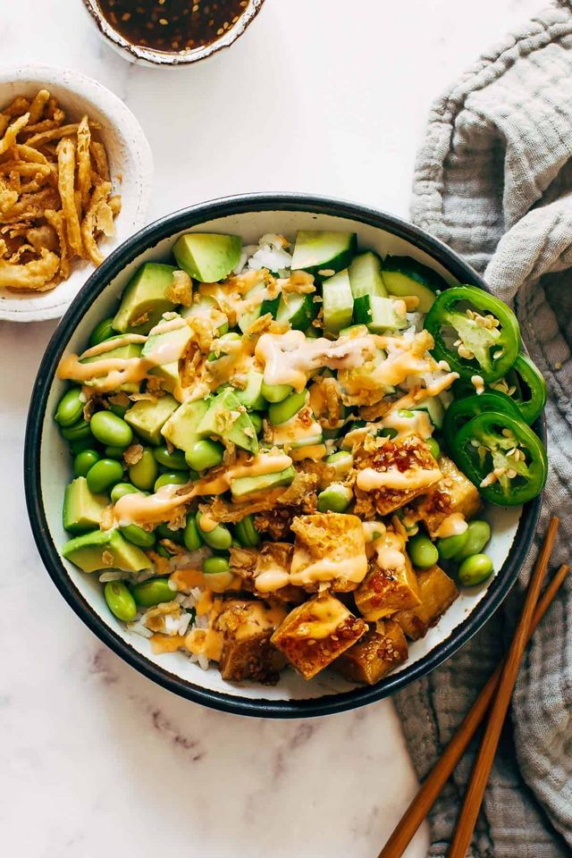

Crunchy Roll Bowls

Servings: 4-7
Prep Time : 15-20 minutes
Cook Time : 3-4 minutes
Total Time : 30-40 minutes
Rinse the sushi rice under cold water until the water runs clear, then cook it according to the package instructions. Once cooked, combine rice vinegar, sugar, and salt in a saucepan, heating gently until the sugar dissolves, then fold the mixture into the rice and let it cool to room temperature.
For the protein, cube the sashimi-grade tuna or salmon, or prepare cooked shrimp or imitation crab. Prepare the vegetables by julienning the cucumber and carrot, slicing the radishes and avocado, and chopping the green onions.
In a small pan, toast the panko breadcrumbs over medium heat until golden, then combine with sesame seeds and optional fried shallots or crispy rice.
To assemble the bowls, spoon the sushi rice into each bowl, then top with the protein and arrange the vegetables on top. Drizzle with soy sauce, spicy mayo, and optional ponzu and sriracha for extra flavor.
Finally, sprinkle the crunchy topping over the bowl and garnish with green onions, wasabi, and pickled ginger. Serve immediately and enjoy the fresh, flavorful bowl!
Ingredients List
- Base
- Sushi rice – 1 cup (uncooked)
- Water – 1 1/4 cups (for cooking the rice)
- Rice vinegar – 2 tablespoons
- Sugar – 1 tablespoon
- Salt – 1/2 teaspoon
- Protein (choose one or mix)
- Cooked shrimp – 1/2 lb (peeled and deveined)
- Tuna – 1/2 lb (sashimi-grade, cut into small cubes)
- Salmon – 1/2 lb (sashimi-grade, cut into small cubes)
- Imitation crab – 1/2 lb (cut into small strips, if preferred)
- Vegetables
- Cucumber – 1 medium (julienned or sliced thin)
- Avocado – 1 (sliced)
- Carrot – 1 medium (julienned or shredded)
- Radishes – 3-4 (thinly sliced)
- Green onions – 2 stalks (sliced thin)
- Crunchy Topping
- Panko breadcrumbs – 1/2 cup
- Sesame seeds – 1 tablespoon (black or white)
- Fried shallots or fried onions – 1/4 cup (optional)
- Crispy rice (optional) – 1/4 cup (store-bought or homemade)
- Sauces & Seasoning
- Soy sauce – 2 tablespoons (for drizzling)
- Spicy mayo – 3 tablespoons (made from mayo and sriracha)
- Ponzu sauce – 1 tablespoon (optional for extra citrus flavor)
- Sriracha – 1 tablespoon (for extra heat, optional)
- Wasabi – small amount (optional for serving)
- Pickled ginger – a small serving (optional, for garnish)